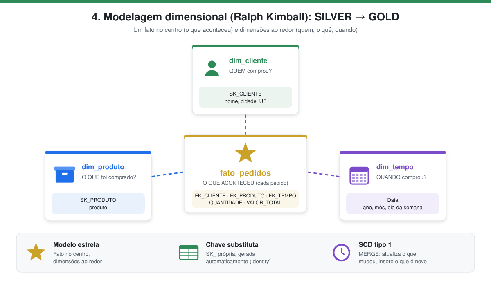
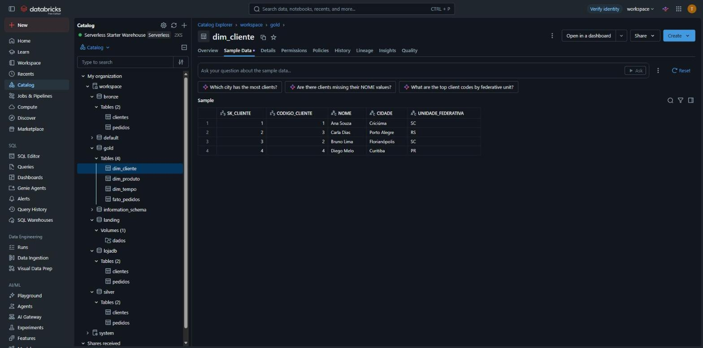
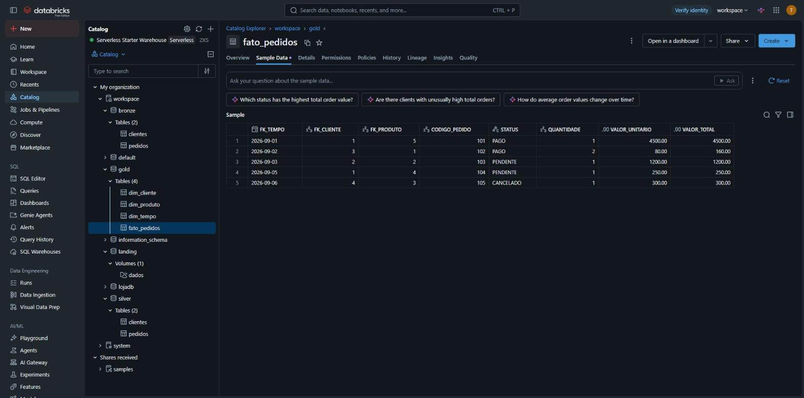

4. Modelagem dimensional → GOLD
Notebook: 005_silver_para_gold

Em poucas palavras: os dados são reorganizados em formato de estrela. No centro fica a tabela de pedidos (o que aconteceu, com quantidades e valores) e, ao redor, as tabelas que explicam cada pedido: quem comprou, o que comprou e quando. Assim fica fácil responder perguntas como "quanto cada estado comprou?".
| Condição | O que significa |
|---|---|
| Ler os dados da SILVER | Usa apenas os dados já revisados. |
| Alimentar as tabelas dimensionais (Ralph Kimball) | Cria a fato fato_pedidos e as dimensões dim_cliente, dim_produto e dim_tempo. |
| Schema GOLD | As tabelas finais ficam no schema gold, prontas para relatórios e dashboards. |
O que é a camada gold
A gold contém os dados prontos para consumo analítico (BI, dashboards, relatórios), organizados segundo a modelagem dimensional de Ralph Kimball.
Modelagem dimensional (Ralph Kimball)
Kimball propõe separar os dados em dois tipos de tabela, formando um modelo estrela:
- Fato: registra os eventos do negócio e as métricas numéricas (quantidade, valor). Aqui, cada pedido.
- Dimensão: descreve o contexto dos fatos, respondendo "quem, o quê, quando". Aqui, cliente, produto e tempo.
Outros conceitos aplicados:
- Chave substituta (SK): cada dimensão tem uma chave própria (
SK_CLIENTE,SK_PRODUTO), gerada pelo Delta combigint generated by default as identity, independente da chave do sistema de origem. - SCD tipo 1: as dimensões são carregadas com
MERGE. Se um cliente mudar de cidade, o registro é sobrescrito (sem guardar histórico); se for novo, é inserido. - Dimensão tempo: um calendário gerado com todos os dias de 2026, com ano, mês, nome do mês, dia e dia da semana.
- Dimensão degenerada:
CODIGO_PEDIDOeSTATUSficam direto na fato, pois não têm outros atributos que justifiquem uma dimensão.
dim_cliente
│
dim_produto ── fato_pedidos ── dim_tempo
| Tabela | Tipo | Chave | Colunas |
|---|---|---|---|
gold.dim_cliente |
Dimensão | SK_CLIENTE |
CODIGO_CLIENTE, NOME, CIDADE, UNIDADE_FEDERATIVA |
gold.dim_produto |
Dimensão | SK_PRODUTO |
PRODUTO |
gold.dim_tempo |
Dimensão | Data |
Ano, Mes, NomeMes, Dia, NomeDiaSemana, NumeroDiaSemana |
gold.fato_pedidos |
Fato | — | FK_TEMPO, FK_CLIENTE, FK_PRODUTO, CODIGO_PEDIDO, STATUS, QUANTIDADE, VALOR_UNITARIO, VALOR_TOTAL |
Carga das dimensões (MERGE / SCD1)
WITH cliente_relacional AS (
SELECT codigo_cliente, nome, cidade, unidade_federativa
FROM clientes
)
MERGE INTO gold.dim_cliente AS d
USING cliente_relacional AS r
ON r.codigo_cliente = d.codigo_cliente
WHEN MATCHED AND (r.nome <> d.nome OR r.cidade <> d.cidade OR r.unidade_federativa <> d.unidade_federativa) THEN
UPDATE SET nome = r.nome, cidade = r.cidade, unidade_federativa = r.unidade_federativa
WHEN NOT MATCHED THEN
INSERT (codigo_cliente, nome, cidade, unidade_federativa)
VALUES (r.codigo_cliente, r.nome, r.cidade, r.unidade_federativa)
Carga da fato
A fato busca a chave substituta de cada dimensão pelo valor natural (código do cliente, nome do produto e data):
insert into gold.fato_pedidos
select dtem.data, dcli.sk_cliente, dpro.sk_produto,
p.codigo_pedido, p.status, p.quantidade, p.valor_unitario, p.valor_total
from pedidos p
inner join gold.dim_cliente dcli on p.codigo_cliente = dcli.codigo_cliente
inner join gold.dim_produto dpro on p.produto = dpro.produto
inner join gold.dim_tempo dtem on p.data_pedido = dtem.data
Resultado
gold.dim_cliente
| SK_CLIENTE | CODIGO_CLIENTE | NOME | CIDADE | UNIDADE_FEDERATIVA |
|---|---|---|---|---|
| 1 | 1 | Ana Souza | Criciúma | SC |
| 2 | 3 | Carla Dias | Porto Alegre | RS |
| 3 | 2 | Bruno Lima | Florianópolis | SC |
| 4 | 4 | Diego Melo | Curitiba | PR |
A SK_CLIENTE não acompanha o CODIGO_CLIENTE, e isso é esperado: a chave substituta é independente da chave da origem.

gold.dim_produto
| SK_PRODUTO | PRODUTO |
|---|---|
| 1 | Mouse |
| 2 | Monitor |
| 3 | Headset |
| 4 | Teclado |
| 5 | Notebook |
gold.dim_tempo: 365 linhas (todos os dias de 2026).
gold.fato_pedidos
| FK_TEMPO | FK_CLIENTE | FK_PRODUTO | CODIGO_PEDIDO | STATUS | QUANTIDADE | VALOR_TOTAL |
|---|---|---|---|---|---|---|
| 2026-09-01 | 1 | 5 | 101 | PAGO | 1 | 4500.00 |
| 2026-09-02 | 3 | 1 | 102 | PAGO | 2 | 160.00 |
| 2026-09-03 | 2 | 2 | 103 | PENDENTE | 1 | 1200.00 |
| 2026-09-05 | 1 | 4 | 104 | PENDENTE | 1 | 250.00 |
| 2026-09-06 | 4 | 3 | 105 | CANCELADO | 1 | 300.00 |

Consulta no modelo estrela
Total vendido por UF e status, cruzando a fato com a dimensão cliente:
select dcli.unidade_federativa, f.status, sum(f.valor_total) as total_vendido
from gold.fato_pedidos f
inner join gold.dim_cliente dcli on f.fk_cliente = dcli.sk_cliente
group by dcli.unidade_federativa, f.status
order by dcli.unidade_federativa, f.status
| UNIDADE_FEDERATIVA | STATUS | TOTAL_VENDIDO |
|---|---|---|
| PR | CANCELADO | 300.00 |
| RS | PENDENTE | 1200.00 |
| SC | PAGO | 4660.00 |
| SC | PENDENTE | 250.00 |